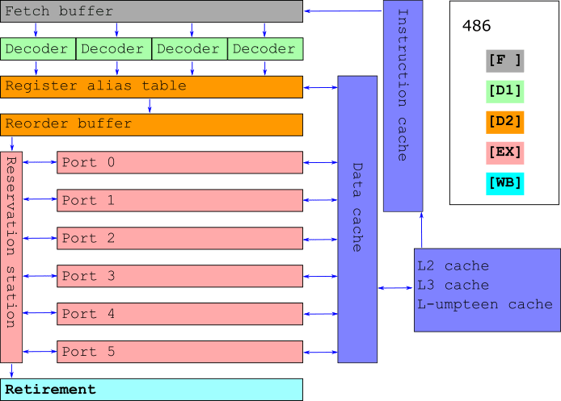

Hello, World
#include <iostream>
int main()
{
std::cout << "Hi, I'm Borislav!\n";
std::cout << "These slides are here: is.gd/lifeofi\n";
return 0;
}
Borislav Stanimirov
- Mostly a C++ programmer
- Mostly a game programmer
- Recently a medical software programmer
- Open-source programmer
- github.com/iboB
About this talk
It's not about C++
About this talk
- Answering some questions
- What do modern CPUs do?
- Why do we need CPU cache?
- Why is branching slow?
- Why do we need speculative execution?
About this talk
- A beginner-friendly introduction
- Covering a lot of ground
- Almost every point can be a talk on its own... or a series of talks
- Many things we'll only briefly mention
- We'll skip a lot of details
- We'll focus on x86
Basic terminology
Cycle or Tick
- The time unit of the CPU.
- Clock speed. This is what the GHz stand for
- The perfect measurement of complexity
- The CPU goes "Tick. Tick. Tick."
Basic terminology
Register
- A (named) chunk of data on the CPU itself
- A "word" for the CPU (or less)
- Fastest possible access
- Not to be confused with...
Cache
- Not to be confused with "cash"
- Data close to the CPU
- The outside world is slow
- ... but we're won't be talking about caches
Basic terminology
Instruction
- A function for the CPU
- A designated path on the transistors of the CPU
- Input - some registers
- Output - some other registers
- Not all instructions are equal in terms of performance
- Instruction sets - what instructions a CPU supports
Other stuff
- CU - king, ALU, FPU, MMX, SSE - plebs
- Concrete registers
- Concrete instructions
- Communication with external (to the processor) devices
We won't deal with those.
If you're intersted, "Inside the Machine" by Jon Stokes is a great entry-level book on the subject.
Types of CPUs
Many ways to classify
By instruction set:
By purpose:
- General purpose
- Accellerators, GPUs, FPGAs
Microcontrollers, virtual CPUs, exotics, MISC, and more
CISC and RISC: x86 and ARM
Very, very similar
Some differences:
- Instruction set (Duh). RISC consumes less power
- Different names for the same things (annoying)
- Load/Store and Register Memory
- Many minor things
Our focus is x86, but many things apply to ARM too
1978: Intel 8086
- Lots of cool stuff
- A set of cool registers (AX-DX, address, IP)
- A set of cool instructions
- It's still backwards compatible. Many things have been added, but nothing has been removed
- PCDOS on a Core i9
The life of an instruction on 8086
- Tick. What's in IP? Load it
- Tick. Prepare input
- Tick. Execute
- Tick. Retire. Output.
- Tick. Increment IP
... well, in a perfect world at least
Slow instructions. Getting data. Wait state. Empty ticks
Modern innovations
- 80286: Instruction cache
- 80386. Data cache
- 80386. Translation lookaside buffer cache. TLB
- L2, L3, L-umpteen cache
- 80486: First pipeline. Big success. An average of twofold improvement over a 386 with an equivalent clock speed
The 486 pipeline
- Fetch: take from instruction cache
- Decode 1: determine path on CPU
- Decode 2: prepare input
- Execution: execute instruction
- Writeback: write output
5 different parts of the cpu:
i 1: [F ][D1][D2][EX][WB]
i 2: [F ][D1][D2][EX][WB]
i 3: [F ][D1][D2][EX][WB]
i 4: [F ][D1][D2][EX][WB]
i 5: [F ][D1][D2][EX][WB]
cpu: TickTickTickTickTickTickTickTickTick
Problems with the 486 pipeline
Inherited from before: Cache miss → Wait state → Sad panda
Pipeline stall
Swap a and b:
XOR a, b; XOR b, a; XOR a, b;
On the pipeline:
XOR a,b: [F ][D1][D2][EX][WB]
XOR b,a: [F ][D1][PS][PS][D2][EX][WB]
XOR a,b: [F ][D1][PS][PS][PS][PS][D2][EX][WB]
cpu: TickTickTickTickTickTickTickTickTickTickTick
An instruction waiting means a stall
Pentium: The Savior
OoO that's cool. Out-of-order execution. 486 on steroids
Fetch many instructions from instruction cache
x
Take several instructions from Fetch buffer
Split them into μ-ops (pieces of instructions)

Arrange several μ-ops at a time
Register renaming: virtual registers to μ-ops
Reorder μ-ops and send to the reservation station
x
OoO magic. Execute μ-ops in a ultra-mega-fast-fashion
Make maximal usage of the available ports (execution units)
Now there's a distinction between latency and throughput
x

Wait for μ-ops per instruction
Wait for instructions and rearrange in initinal order
OoO that's cool
We solved the pipeline stall problem
All this magic is indistinguishable from grandpa 8086 to the programmer and program
OoO that's not so cool
We created a new problem
... when we have branching
... we invest too much
We get a monstrous pipeline stall:
- Wait for all pending instructions to finish
- Roll back to the previous state
- Restart the pipeline from the new place
Not really acceptable if we have 100 (or more) instructions in the pipeline
Speculative execution
The answer to our waste problems
- When there's branching, execute both branches
- When we finally know which is the correct branch, throw away the calculations for the other one
- There's still waste, but much less of it
- Enter branch predictors to help
- Enter speculative execution exploits to spoil the good thing that we've got going here
The Life of a CPU Instruction
To our program the world looks exactly like it did in 8086
But to the instruction...
We have an instruction whose program is running
Life is good
Suddenly the clever prefetch adds it to the instruction cache
with some thousands of other istructions

In instruction cache the Instruction Pointer is coming near
x
The instruction loads our hero along with some tens of others
to the fetch buffer
It's our hero's turn to enter the decoder
The decoder splits it into several μ-ops
The decoder finds out that some μ-ops need extra data
On the other end of the world loading of data into data cache is initiated
μ-ops enter the register alias table
They get distributed renamed "fake" registers
μ-ops enter the reorder buffer
They are orderd by dendencies
At the first possible opportunity they are sent to the reservation station
Some μ-ops get executed right away. No one here knows why.
Some μ-ops of our hero keep waiting, while μ-ops of
other instructions get executed
... and waiting
... and waiting
Finally their data is ready
They get executed
Now completely executed our instruction gets merged on its
way of out of the reservation station and its result is ready

In the retirement phase our hero gets put back in line
with its original neighbors so it can leave the CPU
Now we know
- Why branching is slower. It wasn't on 8086
- What's the point of speculative execution
- How caches help. They are physically closer to the CPU
- We can't tell how fast a program is just by looking at its dissasembly